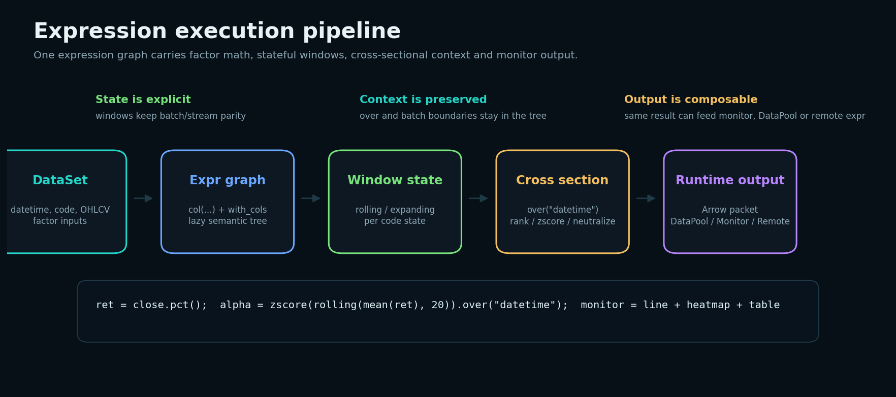

表达式即研究资产
因子不只是临时列。表达式树保留列依赖、窗口、over 上下文、参数和输出名，方便复用、保存、远端执行和可视化。
Quant research engine
Qust 把金融研究里的因子计算、截面处理、窗口状态、回测输出、Monitor 可视化和远端执行收束到同一棵表达式树。用户写的是紧凑的 Python 表达式，底层执行的是 Rust runtime；同一套语义可以跑本地批处理、流式数据、浏览器 Wasm 和 remote expr。
Qust 的重点不是再造一个 DataFrame 包装层，而是把量化研究里最容易散掉的语义保存在表达式里：因子定义、窗口状态、截面上下文、参数、图表输出、远端数据源和回查路径都能被 runtime 看到。
因子不只是临时列。表达式树保留列依赖、窗口、over 上下文、参数和输出名，方便复用、保存、远端执行和可视化。
滚动、扩展窗口、状态型策略算子由 runtime 管理，减少 Notebook 全量计算和实盘增量执行之间的语义偏差。
图表、参数面板、DataPool、选择回查和 callback 是同一条协议链路，不需要在 Python 里手写 UI 状态机。
窗口、分组、schema、Arrow packet 和执行边界下沉到底层，Python 侧保持表达清晰，性能和行为更稳定。
Expr.remote(url, data) 返回普通 Expr，远端数据源按 server 视角解释，结果作为列回到本地表达式。
Wasm / Pyodide 让同一套表达式进入网页演示、教学和轻量调参，降低环境成本。
因子分析不应该停在一张收益曲线。专业研究需要同时看单调性、IC 稳定性、分组收益、lead horizon 衰减、事件风险和可交易性。Qust 的 alpha().alphalen_analysis(monitor) 把这些诊断做成表达式输出：计算链路留在 runtime，展示交给 Monitor。

复杂因子通常同时包含时间窗口、截面处理、状态缓存和图表输出。Qust 的做法是让每一步仍然是表达式节点，runtime 根据 schema 和上下文生成执行器，而不是让用户在 Python 循环里手工维护状态。

pct() 或收益输入先形成基础信号列，仍然保留在表达式树里，不提前落成不可追踪的临时 DataFrame。
rolling(20).over("code") 表示每个标的独立维护窗口，stream 执行时状态可以跨 batch 延续。
over("datetime") 把每个交易时点作为截面边界，rank、zscore、demean 都在正确上下文里执行。
同一结果可以继续接 monitor、save_data、remote 或回测算子，不需要拆成多套脚本。